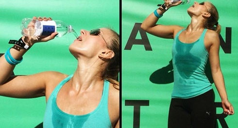
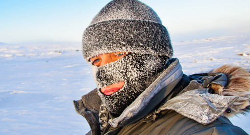
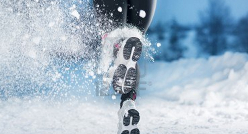
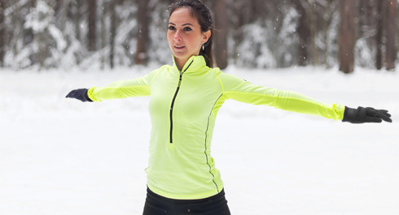
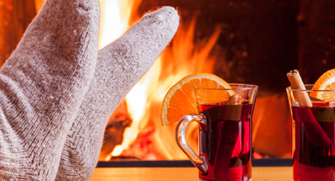

Street Workout is also known as fitness from the streets, which means it is very affected by the weather conditions outside. There can be hot summer sun or cold winter snowfall, but this doesn't mean you have to cancel your training session. All you have to do is take this conditions into consideration and make changes to your training. Today we will discuss several bacis recomendations how to train comfortly all year round!
WINTER Training
There is a significant difference either you train in Winter (cold weather) or in Summer (hot weather). This difference could be divided into several key points which you would better follow if you want to stay healthy and still make gains no matter what weather is outside. Today we have prepared two simple guidelines regarding training in different weather and temperature conditions.
BENEFITS
1. This is an excellent opportunity for hardening your body. Start training in winter and notice how you get rid of annual flu.
2.You can keep progressing (or remain the same level) so you would not have to start all over again in the spring.
3. You will get an unforgettable experience of training, when the sun just rises over the horizon, exhalation coming out of your mouth, and new-fallen snow squeaks underfoot.
4. This is a good exercise for willpower and training of firmness and purposefulness.
5. The air in winter often more fresh and invigorating, so you will feel well and have a good mood.
It is logical that the main problem of training in cold weather is the temperature regime as it carries several dangers that are worth paying attention to. But almost all of them you can avoid with the ride equipment, so here are the main rules during winter training:
Rule №1: Do not overheat!

Most common mistake among people starting training in winter is that they exaggerate the effect of cold and put on too many clothes, they dress almost the same as an ordinary passerby. As a result, it makes them kind of difficult to train, they quickly begin to sweat profusely and feel uncomfortable.
For the winter training you need to equip such a way that you will (!) feel cold while standing on the spot, but if you train hard then you feel hot, the only question is how soon.
Rule number 2: Multi-layer clothing

Typically, winter athletes wear several layers of clothing, each serving its own function. The bottom layer is thermal underwear designed to remove perspiration from the body. And my unequivocal choice is a complete overall than separate jacket + pants. During training we do a lot of movements, which can open our back toward all winds (squats, corners, climbs with handspring and so on), and this should be remembered. The second layer is used for warming, best one is made of fleece. And the third, outer layer is designed to protect from wind, rain or snow. Depending on the current weather conditions you should vary in different ways to combine elements of your sports wardrobe.
Rule №3: Care your head

Special attention should be paid to the open parts of the body: hands, ears, nose. If the weather is already under zero degrees (C), especially with a strong wind, make sure that you take care of the head and legs. In the bitter cold, no matter how warmed you get from training, your ears and your nose are still have a risk of getting a frostbite. So don`t forget the hat, and in severe frosts you`d better to have a special mask, balaclava or buff, or at least, a warm scarf. And, of course, take care of your fingers. They (fingers) work hard during workouts, and it`s not the most pleasant thing in the world to hold on a metal bar when the weather is 20 degrees under zero. So if you don`t have gloves yet, it's the right time to buy them.
Rule №4: WARM doesn't mean EXPENSIVE!
On the Internet you can find hundreds of websites that promote specific branded clothing designed for training during the cold season. Typically, it costs a lot of money and has fantastic descriptions of its effectiveness. The acquisition of such high-tech equipment is useful if you have enough money, but it`s not necessary for successful winter training. The main thing is to remember that you should give preference to synthetic fabrics that don`t absorb moisture and dry quickly.
Rule №5: Remember to warm-up

As for the training, a warm-up begins to play much more important role. If in the summer warm-up is useful, in the winter it`s totally required.
Warming up the muscles and sprains will prepare your body to work in the cold. I advise all car owners to imagine an analogy with the car. Starting it at a temperature of +30 and -30, as they say in Odessa, is two big differences. It would be better to warm-up before (!) going outside, so that you can get out of the cold and immediately start training. If your regular training place is quite far from home, it's time to include jogging in the training program
Rule №6: Winter on the street

Your body spends more energy to maintain the body temperature when you train outdoors during winter, so keep this in mind when you plan training. Perhaps it would be useful to reduce the load. Also don`t stand without moving during the rest between exercises and set, walking and arms swings will allow you to keep warm.
Pay special attention on glaze ice. It is really a serious risk in the winter, because a bad fall on the ice can cause some serious injury. Therefore, jump down from bars carefully, watch your steps during the lunges and during the warm-up run.
You can inhale cold air exclusively through the nose, it helps to avoid colds and infectious diseases associated with prolonged inhalation of cold air.
Rule №7: End of training session

After a workout you are not allowed to stay sweaty without physical activity. Therefore, try to finish the workout and immediately enter into a warm room. If the home is far - congratulations, you can also add jogging as an exercise for the endind your training. When you come home, take a warm shower, rub dry with towel and drink hot tea. It will be a great end of the workout.
Conclusion
Although winter training is not an extreme thing, it still differs from your ordinary workout. Listen to your feelings, don`t set impossible goals, don`t hesitate to cancel training in heavy thunderstorms or if you feel sick. Be reasonable. Sometimes it is better to hold a light training session at home or even miss it than have pneumonia for a month.
P.S. Two more tips before we go futher. First, it will be more pleasant if before going to the gym you throw your clothes at the battery then go out. Second, If you run in the winter, then complete running in the direction of the wind, this way you won`t choke off the cold flow.
SUMMER Training
Summer training features and rules
If it’s already May, it means that summer is just around the corner, the most active and the hottest (in every way) time for the street workout. While it is an off-season period in many sports, a real “boom” appears at the street grounds: the after-winter workouters, come-and-go «snowdrops», who decided to build their body for the beach season within a month, and winter sports representatives, who can train only the GPP(General Physical Preparation) in summer. Trainings in summer are easy, funny and pleasant, however, there are certain points that we will try to draw your attention to in today’s post.
Let’s determine what we should be afraid of, while training in summer: high temperature and air humidity, direct sunlight, dehydration, hypothermia, conditionally poisonous fumes. And now we’ll talk about everything in order.
High temperature and air humidity

Our body is a self-regulating system that maintains the constancy of the internal environment (homeostasis). The body temperature, which affects absolutely all chemical reactions in the body, is one of the most important homeostasis indicators. Therefore, a prolonged deviation (up to 24 hours) of a body temperature, from normal to 4-5 degrees lower/higher, leads to death.
To ensure the constant body temperature, our body has a number of mechanisms: vascular tone for the redistribution of blood between cold and warm areas, sweating, cold shivering, etc. You should keep in mind that the temperature of the body depends on 2 parallel processes: the generation of heat and its transfer to the external environment. At rest 2/3 of the human body heat is produced by internal organs, and 1/3 by muscles. During a training, the situation changes dramatically and now the muscles form the bulk of heat, i.e. the whole heat production is 2-3 times higher. The heat transfer takes place in 3 ways: thermal conduction, convection and heat radiation. Without going into the details of the school physics course, I’d like to note that the critical air temperature is 28-32 degrees. When this level is reached (and what’s worse if it’s even higher), a body loses its ability to give heat off. In fact, when the air temperature is above the skin temperature, we have only one heat transfer mechanism - heat conduction (by sweating and ventilation of the lungs). In its turn, the effectiveness of this mechanism depends greatly on the humidity of the air. For example, at 100% air humidity, the evaporation of sweat will not occur at all. That means that the danger of overheating and obtaining a heat stroke increases sharply, when the air temperature reaches the skin temperature and / or air humidity is 80-100% .
Direct sunlight

Direct sunlight are able to heat objects almost unlimitedly. Train in the morning or in the evening, when the sun is just rising or already going down. Following this, you reduce the risk of heat and sunstroke. Their symptoms are: an appearance of headache, dizziness, lethargy, a feeling of fatigue or agitation (anxious arousal), disorientation and confusional state. In severe cases, convulsions, loss of consciousness, hallucinations. There is a rapid pulse, a high body temperature, skin becomes dry and hot.
If someone got a heat or sunstroke, you should immediately call an ambulance. Before the doctors arrive, transport the injured person to a cool room or shady place, give him/ her water and put a cold compress on his/her head.
Dehydration

In summer, the body increases sweating to keep body temperature at a normal level. Therefore, if this fluid is not compensated in time, then the risk of dehydration increases. Even a slight dehydration increases the wear of joints and the possibility of injury, and reduces the ability of muscles to recover after training.
According to the risk of dehydration mentioned above, the recommendations for drinking will be as follows: Drink water one hour before training in moderation (it is enough to drink about 0.5 liters). Drink water during exercising every 10-15 minutes in small portions. Drink mineral water or ice tea after training.
Hypothermia

In summer sometimes there is a desire to take a cold shower or to plunge into a lake after a training. This is not quite obvious, but still a common danger.
Exercises make the body temperature higher and stimulate metabolism. Heart increases its rhythm and blood circulates through the body with a great speed. The vessels expand in order to cope with the pressure increased. But as soon as the body is immersed in cold water, the vessels begin to constrict rapidly, and the blood pressure increases sharply. This is a great stress for the body as the blood pressure may jump suddenly, or simply you can catch a cold, because at that moment the ability of the body to resist the diseases is harshly reduced.
Harmful fumes

Smog, greenhouse gases and other "achievements" of civilization have become long ago faithful companions of the large cities inhabitants. Due to the high temperature and air humidity in summer, the concentration of these substances in the air increases multiple times. Therefore, if you can smell various unpleasant flavors at your sports ground in summer, then you should find another place for training.
Training programs features
In winter, when the food is peculiar and mobility is lower, there is a natural accumulation of a body weight. In spring and summer, on the contrary, fruit and vegetables in the diet reduce its calorie content, and an increase in motor activity leads to an additional calorie loss. Therefore, it is logical to do obvious things throughout the year: in winter - build up muscles actively, in summer - to lose fat. You should adapt your training programs for these purposes. So, in summer you can do less exercises with additional load, but to work on the improving of GPP and strength endurance. Of course, no one prevents you from doing everything just the opposite, but still such an approach will be more natural. So how to adapt your program for summer? You ought to remember about an increased stress for the heart. Watch the way you feel and your pulse. You can make the rest time between the sets longer in order to reduce the intensity or to break the habitual training for 15-30-minute parts, which you will perform during the day several times. You can also remove the auxiliary exercises, focusing on the basic multi-joint ones, which will help you to work out the maximum number of muscle groups at a time. Work with such indicators of the training process as the duration and number of trainings, the number and composition of exercises, the number of repetitions and sets, the rest time between the sets. Remember that the only pain you need to feel is the pain in the muscles (not in the joints, not the headache, not the stabbing, nagging pain in the heart).
Recommendations for SUMMER TRAINING
1. Train preferably in the morning (before 10:00) or in the evening (after 18:00). Try not to train during the afternoon in direct sunlight and choose areas with at least a partial shadow.
2. Drink enough water before training and be sure to bring water to the training.
3. Wear a cap and light clothes made of "cool" fabrics (cotton, linen) for a daylight workout. Do not use antiperspirants before training. They complicate sweating, which increases the chances of getting a heat stroke.
4. Review the intensity and duration of training, make it shorter, if your indexes are lower or if you feel worse in the usual modes.
And remember that we train for the sake of being healthy, strong and active, so the enthusiasm for training should be moderate.